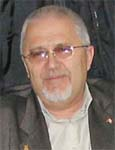

| Три главные опоры христианства |
"Вера есть осуществление ожидаемого
и уверенность в невидимом" (Евреям 11.1) "...знание надмевает, а любовь назидает" (1 Кор. 8:1) | |
|  | Это одно из моих любимых мест и полагаю, что не только мое. Вот это место: "Если я говорю языками человеческими и ангельскими, а любви не имею, то я - медь звенящая или кимвал звучащий. Если имею [дар] пророчества, и знаю все тайны, и имею всякое познание и всю веру, так что [могу] и горы переставлять, а не имею любви, - то я ничто. И если я раздам все имение мое и отдам тело мое на сожжение, а любви не имею, нет мне в том никакой пользы. |
Вера, надежа, любовь. Эти три наиглавнейших для любого человека слова способны быть настоящим фундаментом (основанием) и для всего христианства, твердым и незыблемым, аки гранит или бетон. Как известно, для того, чтобы получить бетон, нужно иметь как минимум три основных компонента: цемент, песок и воду. Только когда эти три компонента соединяются вместе, получается твердая смесь - бетон. В природе, в пустыне очень много песка, но он сыпучий и непрочный. В океанах, морях и реках очень много воды, но она жидкая. Цемент - это просто мягкий, сыпучий порошок, в коем прочностью и не пахнет. Но, когда мы смешиваем все эти три компонента, получаем настоящий твердый бетон, а из него основание на котором уже можно строить прочное здание. И это прямая аналогия с жизнью христианина, которая должна строиться на трех основных компонентах, она должна твердо стоять на вере, надежде и любви. О силе веры Возьму на себя смелость утверждать, что лучшего, более емкого, понятного и краткого, чем Апостол Павел определения Веры (оно уже было приведено в эпиграфе) придумать просто невозможно. Я повторю его: "Вера же есть осуществление ожидаемого и уверенность в невидимом" (Евр. 11:1). И ничего удивительного - если учесть , что Апостолы говорили нам только то , что повелел им Господь. Очень много мест Священного Писания говорят о вере (я насчитал 32 таких места). И это также неудивительно: "ибо без веры угодить Богу невозможно". В послании апостола Павла Галатам, в 5 главе, стих 6 написано: "Ибо во Христе Иисусе не имеет силы ни обрезание, ни необрезание, но вера, действующая любовью". Вдумайтесь в эти замечательные слова, в коих говорится о вере как о силе. Ведь все люди понимают важность силы. Зачастую молодые (да и не только молодые) идут в спортзал, чтобы накачивать свои мышцы. Они верят, что сила в мышцах может принести им успех в жизни. Любой президент, любой начальник осознает, что от количества силовых структур зависит благосостояние его самого и руководимого им государства, зависит то, насколько это государство будет сильно, насколько с ним будет считаться вся мировая общественность (это, кстати, хорошо прослеживается на примере развития России в последние десятилетия). Но апостол Павел говорит очень важные для каждого из нас слова, что во Христе Иисусе не имеют никакого значения внешние проявления, "ни обрезание, ни необрезание, но вера, действующая любовью". Вера, но не физическая мощь, является той силой, благодаря которой Господь способен сегодня влиять на целые нации и народы. Думаю все еще помнят то время, когда две супердержавы: СССР и США постоянно наращивали гонку вооружений. Накопленный тогда ядерный арсенал был уже таков, что достаточно небольшого его процента, чтобы полностью уничтожить всю жизнь на планете Земля. Каждая страна, запасшись атомными бункерами для элиты, пыталась бряцать оружием, чтобы показать свою мощь. Полагаю, что только Господь уберег тогдашних руководителей от рокового шага. В то же время миллионы верующих с верою молились о том, чтобы оковы безбожия и коммунизма упали, противостояние закончилось, а свет Евангелия наконец то проник и в СССР. Именно эти молитвы были Им услышаны и совершили гораздо больше, чем вооружение, гораздо больше, чем атомные бомбы. Бог тем самым показал, что вера гораздо сильнее всего оружия, которое есть на этой земле. Во втором послании к Тимофею Павел говорил: "Подвигом добрым я подвизался, течение совершил, веру сохранил" (2Тим.4:7). Вот как иметь веру еще не все - ее оказывается нужно еще и сохранять, беречь. По жизни нужно идти так, чтобы не потерять веру, а только укреплять ее. Существует притча. Один индус виртуозно ходил по канату с завязанными глдазами и собирал большую публику и показывал свое мастерство. Часто он использовал какие-то приспособления, чтобы удивить народ, а однажды - прошел по канату с садовой тачкой. После этого спросил зрителей: "Верите ли вы, что я смогу посадить человека в эту тачку и перевести его с одного конца каната до другого?" Многие, которые ежедневно приходили и наслаждались его мастерством, закричали: "Верим!" Тогда индус начал приглашать людей. Он спустился и сказал: "Садитесь, я провезу вас". Но все как один отказались: "Нет, мы верим, что ты можешь провести человека, но только не нас. Возьми кого-нибудь другого". Это так похоже на наши взаимоотношения с Богом. Страх и сомнения приходят, когда это касается именно нас, нашей веры. Мы верим, что Бог - исцелитель. Мы верим в то, что Он чудотворец. Мы верим в то, что Он может из любой проблемы сделать благословение. Но очень часто, когда мы попадаем в сложную жизненную ситуацию, у нас так не хватает веры, и мы становимся очень похожими на человека, описанного в Марка 9:24, который сказал: "Верую, Господи, но помоги моему неверию" . Еще одна притча, которой я предваряю слова из 2 послания Фессалоникийцам 3:2, где сказано : "...ибо не во всех вера". Один человек нашел и прочел все книги о вере, познакомился с проповедями, изучил абсолютно все места из Писания, в которых говорилось о вере. Особенно ему нравилось то место, где Петр ходил по воде. И однажды, стоя в своей церкви после собрания, он сделал заявление: "Я смогу ходить по воде, как это делал Петр". Он пригласил друзей к себе домой, заполнил бассейн водой, поставил кафедру, прочитал великолепную проповедь о том, насколько важна вера в жизни верующих, ссылаясь именно на то место в Библии, где Петр шел по воде. Потом он сказал: "Сейчас я вам продемонстрирую, как Петр ходил по воде". Он снял одежду, остался лишь в плавательном костюме, сделал шаг в бассейн и…пошел ко дну. Весь мокрый, он вылез на бордюр и сказал: "Не понимаю, я изучил все места из Писания, где говорится о вере, я прочитал все книги, просмотрел все проповеди. Почему же я не пошел по воде?" И тут маленький мальчик подошел к нему, дернул за руку и говорит: "Дяденька, а зачем же тогда ты разделся?" Это очень поучительная притча. Если мы собираемся "идти по воде", то нам не нужно "снимать одежду". Если мы веруем в Господа, нам нужно не только уповать на Него каждый день, но и доверять Ему во всем. Вера и доверие - однокоренные слова. И еще, напомню, что в послании Иакова (2:22) сказано о том, что "...вера содействовала делам его и делами вера достигла совершенства". Ну что тут сказать, не достигла вера совешенства у человека из притчи, да не будет так с вами. Нужда в надежде.
Надежда. Это второе качество, второй компонент для успешной христианской жизни, второй столб веры христианской. В псалмах (145:5) сказано: "Блажен, кому помощник Господь..., у кого надежда на Господа Бога его". Только на Господа в этой нашей жизни и следует надеяться. Чем же отличается надежда от веры? Если вера относится к сегодняшнему, сиюминутному моменту, к какому-то запланированному действию которое должно сопровождаться верою, то надежда всегда простирает нас еще дальше. Она простирает нас в вечность, напоминает о небесах, к которым мы стремимся и которые ожидают нас, верующих. В послании к Римлянам (8:24) о надежде говорится так : "...мы спасены в надежде. Надежда же когда видит не есть надежда; ибо если кто видит, то чего ему и надеяться?". Лучшего определения понятия надежды я пока не обнаружил нигде. Сегодня многие люди молятся, но не видят ответа на свою молитву. И тогда у них опускаются руки и человек говорит: "Не нужен мне такой Бог, который не отвечает на мои молитвы". Пусть Господь нам даст мудрости иметь в своем сердце надежду на то, что однажды наше тело получит полное искупление, что однажды, когда мы придем в присутствие Бога, где больше не будет боли и страдания закончатся, Он возьмет свой большой платок и отрет все наши слезы. В 3 главе книги пророка Даниила (стихи 1-33) описана история, которая произошла с тремя мужами иудейскими : Седрахом, Мисахом и Авденаго, поставленными над делами страны Вавилонской в царстве язычника царя Навуходоносора. Невзирая на высокое общественное положение они знали Господа и шли за Ним, не взирая ни на что. Сначала они отказались от царского стола, чтобы не оскверняться языческой пищей. Когда царь Навуходоносор создал золотого истукана и повелел всем поклониться ему, то эти иудейские мужи одни только и оказались несгибаемыми и смелыми. Каждый, кто не поклонялся этому истукану, должен был быть брошен в печь, раскаленную огнем. Но это были верующие мужи, они верили в Господа, который приходит на помощь и надеялись на то, что Он избавит их от печи. У них было что-то еще большее: "Бог наш, которому мы служим, силен спасти нас от печи, раскаленной огнем, и от руки твоей, царь, избавит. Если же и не будет того, то да будет известно тебе, царь, что мы богам твоим служить не будем и золотому истукану, которого ты поставил, не поклонимся" (Дан.3:17-18). Они были настолько уверены в Боге, что смерть в печи их не пугала. Они надеялись на счастливую вечность с Богом. Бог оправдал надежды их, и они вышли из огненной печи невредимыми. Вот он, библейский пример, для нас с вами. Если вы годами молитесь о чем-то, и не ослабеваете в вере своей и надежде, то задержка с ответом на молитву - это вовсе не повод оставить Бога, это не повод сдаться. Продолжайте молиться, продолжайте надеяться, Бог обязательно услышит и приидет вам навстречу. Любовь из них больше
Коротко поговорим о любви Евангельской. Начнем, при этом, из 1 послания святого апостола Павла к Коринфянам (13:13), где говорится: "А теперь пребывают сии три: вера, надежда, любовь; но любовь из них больше". Вот так! А почему? А потому, что: "Бог есть любовь" и еще здесь же: "Кто не любит, тот не познал Бога" (1 Иоанна 4:8). Имеете ли вы таки что сказать еще, как сказали бы в Одессе? Нет конечно, ибо словами Библии говорит сам Бог. Бывают моменты, когда в нас угасает вера, когда нет надежды, хотя в народе говорят, что надежда умирает последней. Но есть еще любовь, которая больше и веры, и надежды. Вопрос в том имеется ли любовь в каждом из нас? Замечательное и совершенное определение понятия любви дал святой апостол Павел в первом послании к Коринфянам (13:4-8). Я озвучивал это определерние в начале проповеди и позволю себе повторить его еще роаз, оно звучит так: " Любовь долготерпит, милосердствует, любовь не завидует, любовь не превозносится, не гордится, Не бесчинствует, не ищет своего, не раздражается, не мыслит зла, Не радуется неправде, а сорадуется истине; Все покрывает, всему верит,всего надеется, все переносит. Любовь никогда не перестает, хотя и пророчества прекратятся, и языки умолкнут, и знание упразднится". Размышления о любви Божьей, всегда переполняют человека великой радостью. Ведь Бог возлюбил нас, когда мы были еще грешниками. Что нас держит возле Него? Иисус сказал: "Возлюби Господа всем сердцем твоим, и всею душею твоею, и всем разумением твоим. Сия есть первая и наибольшая заповедь" (Матфея 22:37-38). Это то, что должно нас держать со Господом всегда. На одном из библейских сайтов я обнаружил такую притчу. Один пастор вышел перед церковью и сказал: "Представьте себе, что сейчас в это помещение входит Иисус и говорит: "Мы на небе решили, что ада больше не будет. Мы так любим людей, что решили никого не наказывать, и все люди пойдут в рай. Независимо от тех дел, которые вы совершили, независимо от веры, вы абсолютно все будете спасены". Может ли быть такое?" После различных предположений пастор вновь задал вопрос: "А кто эже тогда останется в церкви? Если мы будем знать, что никакого наказания за наш грех не будет, придем ли мы в следующее воскресенье, чтобы прославить Господа? Будем ли мы ходить в Его свете, или каждый совратится на свой путь?" Так что же нас держит возле Бога: страх перед адом и неотвратимым наказанием или же вера, надежда и любовь ко Господу? Искренне надеюсь, что все таки второе . Это именно те чувства, которые способны провести нас через всякую жизненную ситуацию, это те три столпа, на которых и держится весь христианский мир. |
|
Дорогие братья и сестры! Держитесь за эти три основания, за эти три столпа вашей жизни:
веру, надежду, любовь, из которых любовь больше. Давайте же, в завершение вместе обратимся к
нашему Небесному Отцу.
Отец, мы благодарим Тебя за то, что Ты послал Своего Сына в этот мир, за то, что Он умер за нас и спас нас. Спасибо за то, что сегодня на земле пребывают дарованные нам Тобою вера, надежда и любовь. Дай нам держаться этого, дай нам Божью веру, чтобы могли противостоять дьяволу в любой ситуации. Господи, пусть не угаснет надежда у тех, кто сейчас находится в трудностях. Благослови их, ободри их и поддержи. Господь, дай им также увидеть небо и поселиться там. Дай нам всем Веры и любви Господи, дай нам идти за Тобою не из-за страха, но из-за любви. Помоги нам твердо стоять на этом христианском пути. Пусть узок и многотруден, но с Тобой мы все преодолеем. Будь прославлен в нашей жизни, Господь. Помоги нам своей жизнью свидетельствовать о том, что Ты есть любовь. Тебе, наш Господь, за все слава и хвала. И любовь Господа нашего Иисуса Христа со всеми нами. Аминь! Владимир Заплишный. 16 ноября 2008г. |